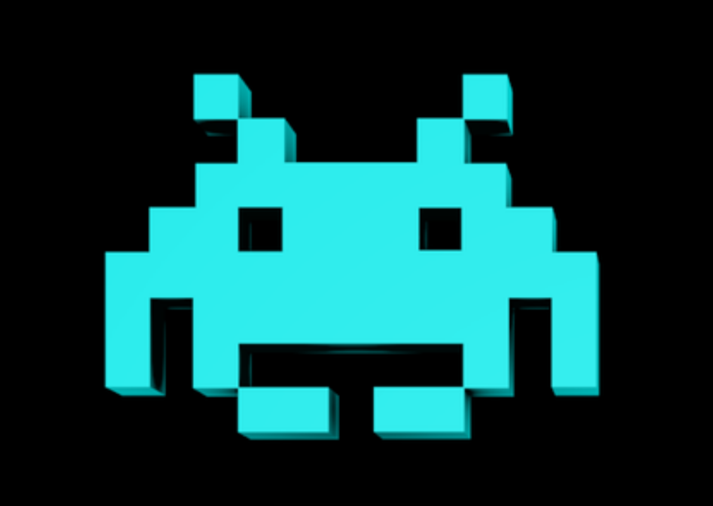
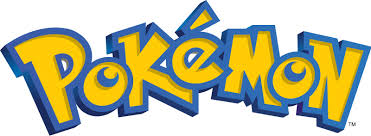

My name is Jack Konar
Source Filmmaker (SFM) is a animating software created and distributed by Valve, a large coporation that is known for creating Steam and Half-Life. I have made a few amount of decent animations that have gotten better each time I used it. The only actual animation I have put out was an exageration of how bad the state of the game Team Fortress 2 is in.
Team Fortress 2 is a class based team game where 9 classes fight against each other to reach a goal. I have made several videos and streams of this game where me and my friends would do some of the stupidest things in the game and get away with it. I have put almost 1k hours into the game and have made several posters about the game.
The Unnofficial Salmon Run Data Page
is a side project that I have been working on for months now.
The website was created for my love of the game, Splatoon 3, and
I wanted to do something that was big enough for my scope but also
accesible for anyone who is interested in the game like I am.